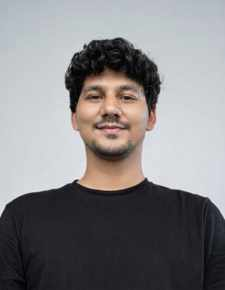

JHU
CURRENTLY
Johns Hopkins
University
MSE Data Science · 2026–2028
Homewood · Baltimore, USA

I am Sahil, a graduate student in Data Science at Johns Hopkins University. My background is in Analytics and Sustainability Studies, and I am building stronger statistical, computational and machine-learning skills to work on real-world environmental, social and development problems.
My work brings together quantitative analysis, sustainability research, field research and computational methods. I am especially interested in questions where environmental limits, economic development and human outcomes intersect.
MSE Data Science · 2026–2028
Homewood · Baltimore, USA
BS in Analytics & Sustainability Studies
2022–2026
I wanted to understand a simple question: can countries improve people's lives without putting increasing pressure on the planet? I built a longitudinal dataset, created a composite environmental-pressure measure, grouped countries with similar patterns, and then tested how those patterns related to development outcomes.
Here is the thesis in normal language — what the dataset contained, what I built, what the models did, and what the results showed.
I combined environmental and socio-economic data from international sources into a country–year panel covering 195 countries from 1990 to 2023. I cleaned country names, aligned years, handled missing values, standardised variables and documented the sources.
I constructed a Planetary Pressure Index (PPI). In simple terms, it gives each country a comparable score representing its combined environmental-pressure profile rather than looking at one indicator at a time.
Instead of deciding in advance which countries were “similar,” I used K-means clustering. The final analysis identified four recurring configurations, from high-pressure/low-development to lower-pressure/low-development and transitioning patterns.
I divided the study into three periods — 1990–2000, 2000–2010 and 2010–2023 — and compared cluster membership across periods. This made it possible to ask not only “where is a country now?” but also “how did its position change?”
I used OLS regression to examine statistical associations between the PPI and GDP per capita, life expectancy, infant mortality, urbanisation, unemployment and female labour-force participation.
I produced charts, country comparisons, spatial visualisations and a Gapminder-style animation so the analysis could be explored visually rather than only through tables.
This is the actual Gapminder-style visualisation from the thesis repository: PPI on one axis, life expectancy on the other, bubble size for population and colour for cluster.
The transitioning/decoupler configuration became much larger over the study periods. The thesis interprets this as evidence of a growing — but still minority — set of countries showing relative improvement in development outcomes compared with ecological pressure.
My projects have moved between environmental data, field research, causal evaluation and practical data systems.
I worked on an RCT-based hiring intervention studying what kinds of job features can make automotive manufacturing roles more accessible and attractive to women.
I designed digital SurveyCTO instruments with logical flows and checks; built a two-phase CV-generation system using Google Forms/Apps Script and later SurveyCTO + Python; helped train field surveyors; supported sampling by mapping residential and industrial areas; and contributed literature review and sustainability reporting.
The treatment arms varied gender ratio, ergonomic support and a safety bundle. Outcomes were tracked from first contact through application, acceptance and retention, with regression and difference-in-means tests planned for evaluation.
Dashboard and visual analytics work connecting development indicators, sustainability themes and data storytelling.
Academic work on database concepts, relational structures and organising data for analysis.
Programming work exploring speech and language workflows as part of my broader computational learning.
The letter confirms my Research Intern role from 2 June 2025 to 1 August 2025 and highlights initiative, data/programming work, collaboration and field-related research contributions.
I have worked across sustainability, climate, development and social research — the SDGs are the visual shorthand for that academic journey.
View the official UN SDG page ↗Worked on an RCT-based hiring intervention focused on women's participation in automotive manufacturing. Built SurveyCTO instruments, supported field sampling and enumerator training, and developed an automated CV-generation workflow using Google Apps Script, SurveyCTO and Python.
Selected from the TISS undergraduate coursework.
Planetary boundaries, sustainability analytics, environmental systems and socio-economic development.
RCT infrastructure, digital surveys, automated workflows, field research and labour-market questions.
Python, R, SQL, MATLAB, Power BI, Tableau, GIS and reproducible analytical workflows.
Your complete professional resume is available as a dedicated, readable page — no request form, no GitHub navigation.
Johns Hopkins University
MSE Data Science · 2026–2028 · Baltimore, USA
Tata Institute of Social Sciences
BS in Analytics & Sustainability Studies · Honours with Research · 2022–2026
Data science · sustainability analytics · statistical analysis · RCT research · GIS · data visualization · Python · R · SQL · MATLAB · Power BI · Tableau · SurveyCTO
For research collaborations, data science opportunities, projects or academic conversations.